Personalized Guidance
From
Reactive
To
Proactive
Ahead of an HR tech company’s annual sales kickoff, executive leadership recognized the need for a major redesign to our flagship product, the employee benefits portal. Clients had expressed dissatisfaction with the portal over the past year, citing a lack of personalization and employee difficulty in finding the information they needed.
- Role
- Product design lead: Design direction and strategy for the homepage
- Guidance for 2 product designers and 1 content designer
- Team
- Core: 2 product designers, 1 content designer, 1 director of product management, 2 user researchers
- Peripheral: 4 product design leads and seniors, 4 product managers
- Timeline
- 10 weeks
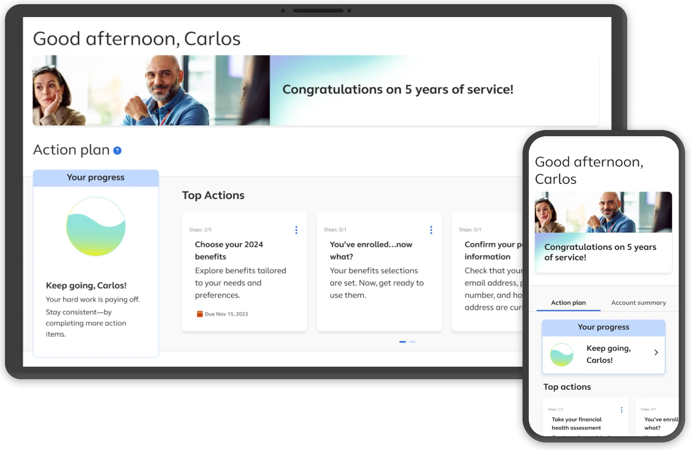
Problem
User surveys consistently revealed low satisfaction due to a common issue: users struggled to find what they needed. The homepage lacked content hierarchy and had become a link farm, due to:
- Past decisions made by the organization’s domain owners, who vied for homepage visibility, with owners carrying the loudest voice dominating the page
- Lack of distinct definition and guidelines for each content section
- No dedicated section for client content, resulting in clients forcing their content in multiple areas
Additionally, on the employer side, site engagement remained low despite significant spending on employee benefits. Employees typically visited the site only for major events such as annual enrollment. Employers also struggle with retention rates due to their employees feeling a lack of sense of belonging in their organization.
Solution
If an employee only has 5 minutes to spend on the site, how might we help focus their attention on the things they need to accomplish, while proactively surfacing content to optimize their benefits utilization?
Action Plan
Create a single section for personalized, actionable items that include must-dos and should-dos
Contextual Actions
Show actionable items in context with relevant, “at-a-glance” content
Simplification
Consolidate redundant sections, and be deliberate in page hierarchy with must-dos, should-dos, and could-dos
Desktop Prototype
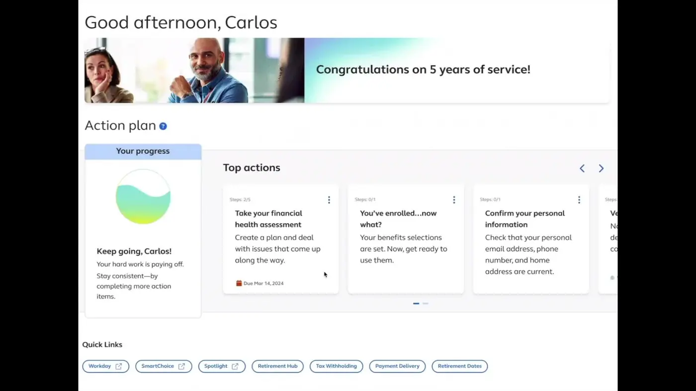
Mobile Responsive Prototype
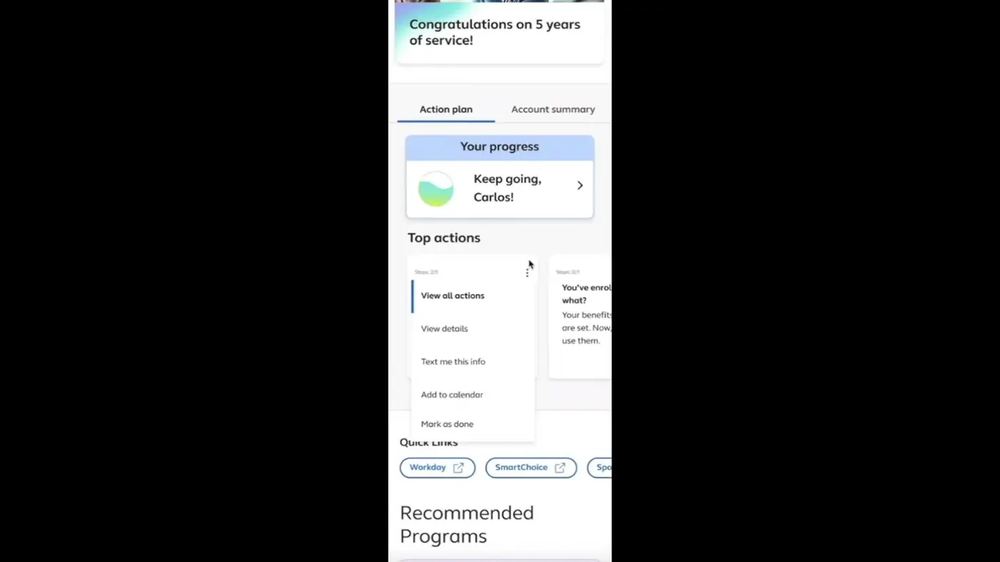
Process
Gather Pain Points
I worked with the Product Management team to collect user and client feedback, analyzed clients’ page configurations, and reviewed site analytics. Key themes from the original design:
- Page navigation
- Content organization and hierarchy
- Inefficient use of space to present account data
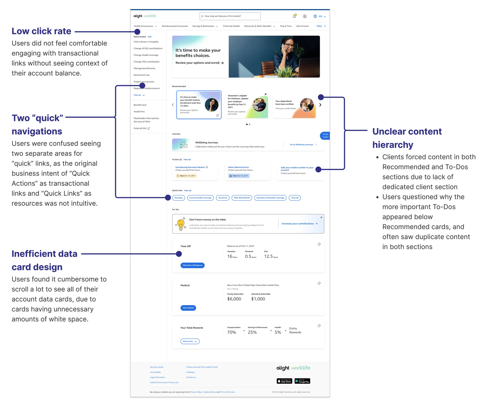
Content Audit
I guided my designers to create an inventory of all action-driving content categories to understand where and how each action could appear.
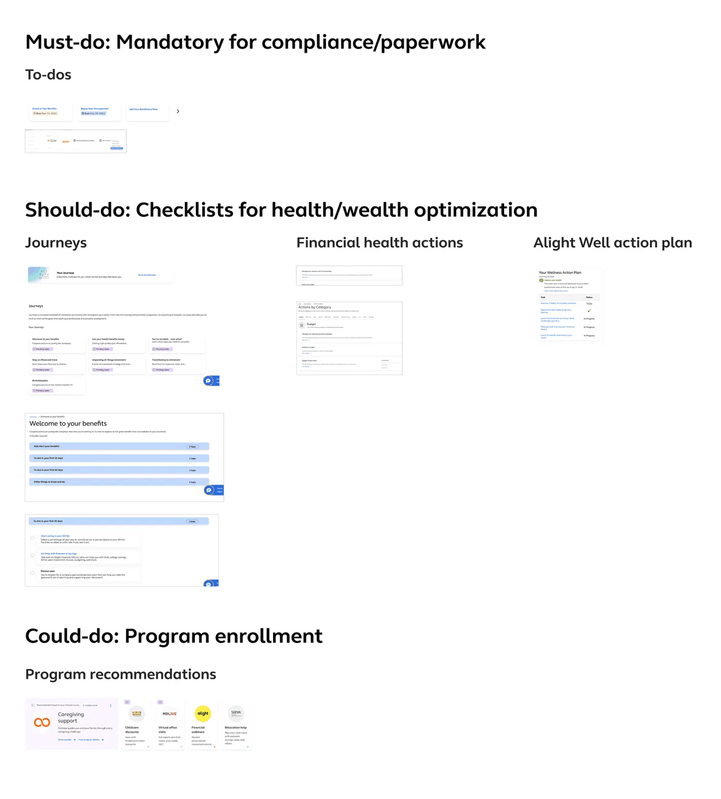
User Journey
To get into the mindset of our target user, I created and led a user journey activity with our core team, and as a result, we gained a shared understanding for the homepage’s objectives (must-do, should-do, could-do) based on user triggers (external and internal).
Key target user traits:
- Complacent with status quo
- Wants to spend minimal time on HR decisions
- Will engage only if personal value or outcome is clear
- Frustrated by complex processes
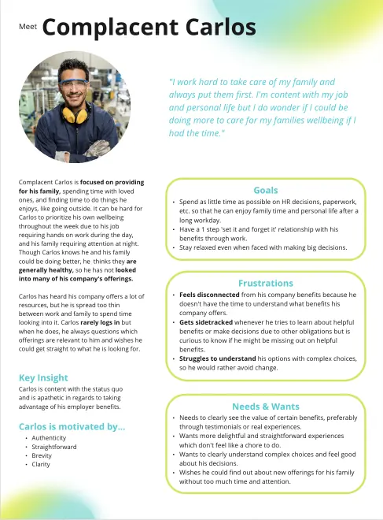
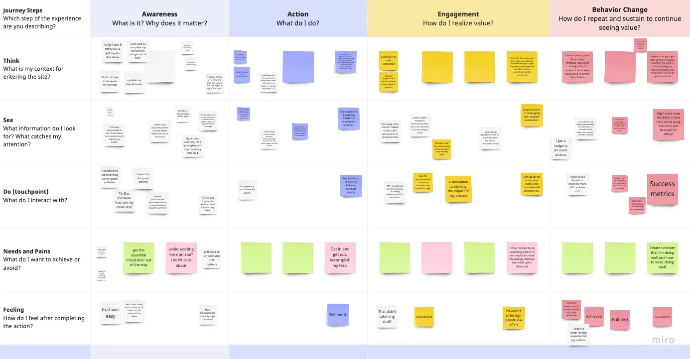
Breadboarding
After seeing intersections with workstreams outside of homepage, I initiated a breadboarding activity with 4 designers overseeing each workstream to assess the scope of the overlaps. I chose the breadboarding activity over a user flow to keep key features and user tasks at a high level.
Key outcomes from breadboarding:
- Established the insight that all workstreams are interconnected to form a cohesive ecosystem
- Helped break down silos within Product Management team
- Defined the essential categories of actionable content for homepage
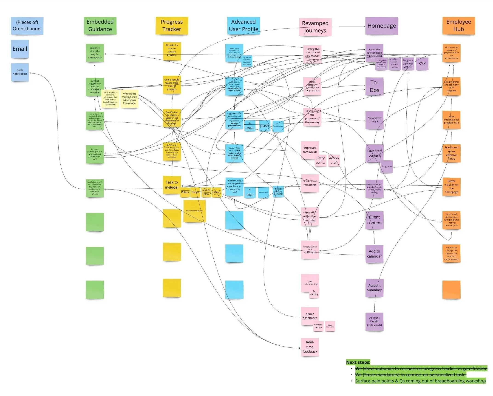
Design Iterations
The primary homepage POV began with a content hierarchy of must-dos, should-dos, and could-dos to guide users on priority of actions. Through user research and stakeholder feedback, the final design streamlined key actionable items into a single section.
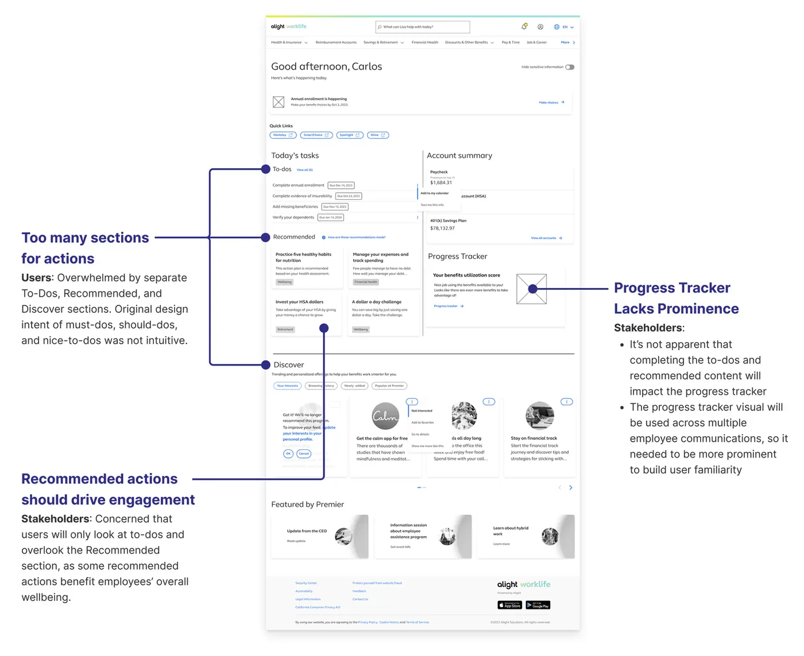
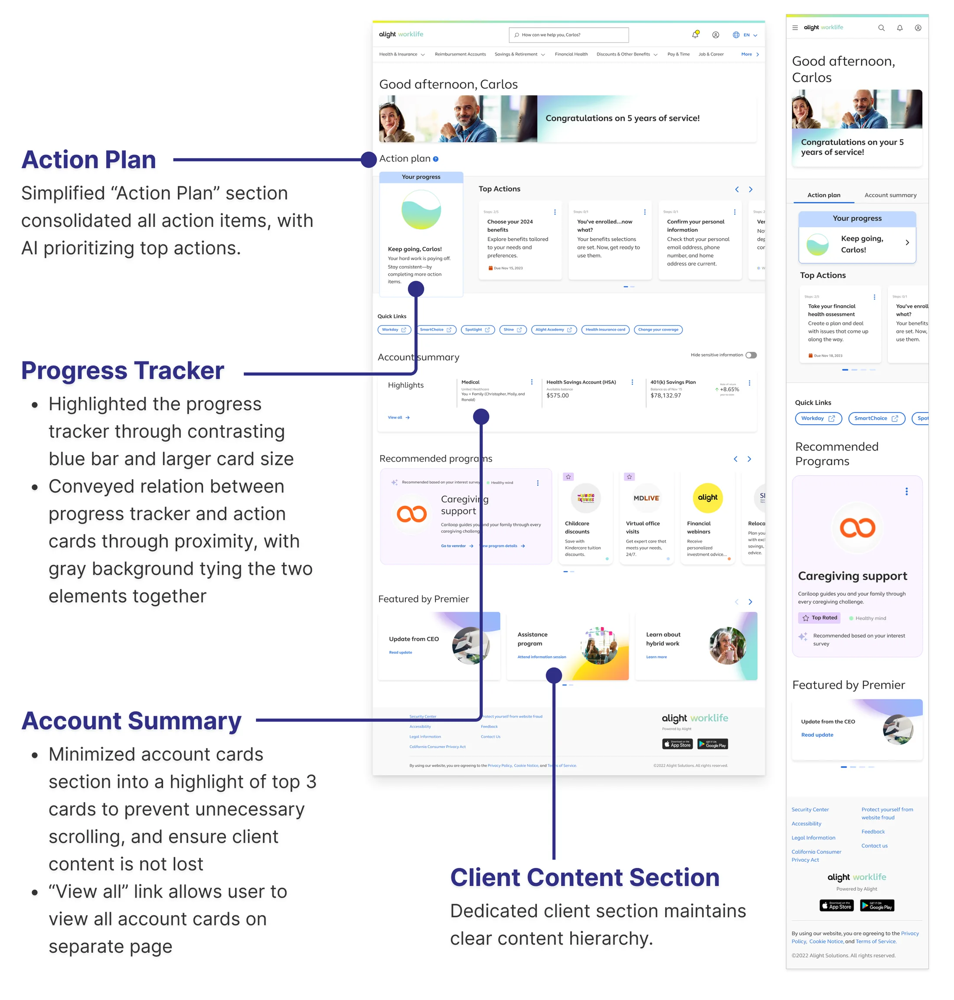
Challenges & Insights
Action Plan
- Actionable content was scattered across multiple repositories, resulting in users seeing duplicate content
- Proposed a single area for action items, which underlined the business need to consolidate content into a single repository to prevent further tech debt
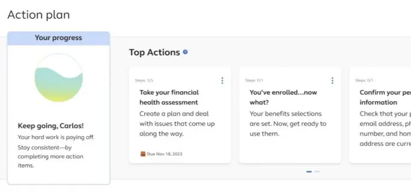
Compact Account Data Cards
- On average, users had 15 account data cards and they cared about only a handful of those cards
- To make better use of page real estate, the “highlights” of top 3 data cards appeared on the homepage, and the full data cards appeared on a separate page with a more compact design to afford more info density and reduce unnecessary scrolling
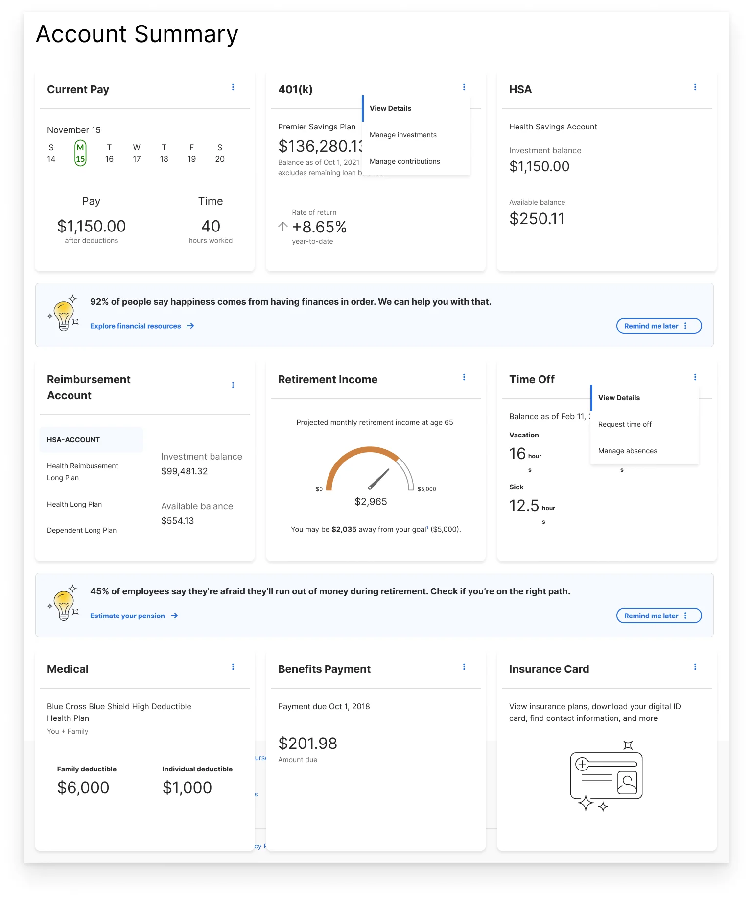
Contextual Actions
- Product team was concerned with removal of the “Quick Actions” left rail
- Research showed that clients were using left rail as a workaround for poor information architecture, and these links were easily embedded in context with account data
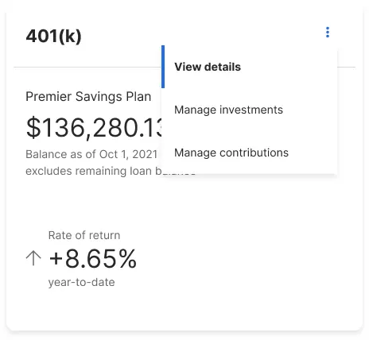
Client Service Documentation
- The company has many services which affect types of content throughout the site, but there was no centralized documentation of offerings broken down by revenue and participant volume
- After I stressed the importance of solving for the 80% of clients, product managers created central documentation, which informed our approach to prioritize our core offering (comprehensive health, wealth and wellbeing), followed by secondary services that the company wants to strengthen
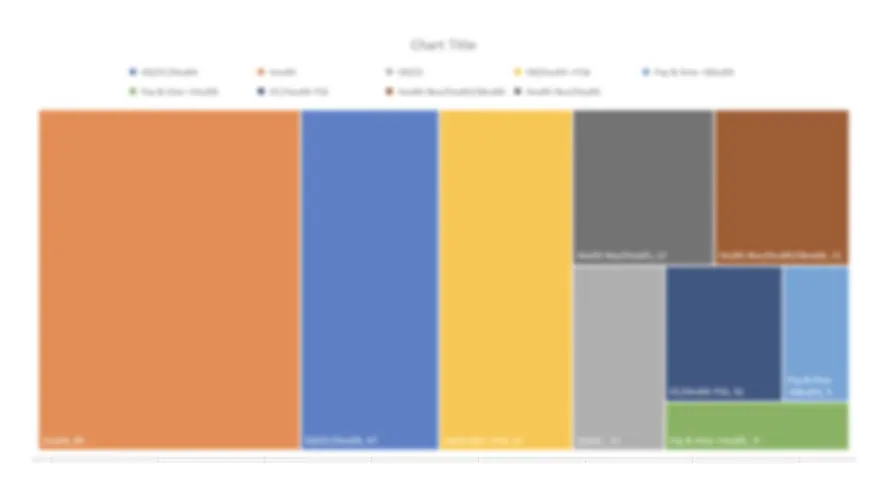
Impact
This project not only resulted in an improved design and product output, but it also sparked new initiatives to reduce tech debt. Additionally, processes from the project served as an example for other teams to embrace a more collaborative, data-driven approach.
The design presentation at the sales kickoff positioned the product & design team as thought leaders within the company, and set the tone and direction for the sales team
The design process broke down silos within the Product Management team, and established process of starting all projects with client and user feedback and analytics
The design concept surfaced need to reassess the site’s information architecture and content inventory, resulting in product managers prioritizing these initiatives
Over 500 clients are eligible for new personalized guidance experience
Key Learnings
- Guide designers to design with best hypotheses based on limited knowns, while constantly raising questions and surfacing gaps to product team. This helped product team understand the value of data informing design
- Design for an 11-star experience so that a scaled down design will still have an excellent experience, and also help other teams see what’s possible
- Ask multiple layers of “why” to truly understand the root pain point